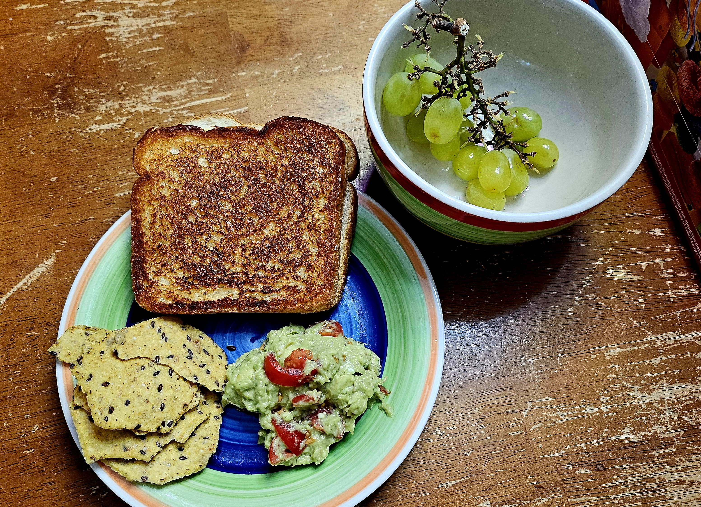

This Recipe will Teach you how to make Banana Chocolate Muffins.

What You will Need for This
- Cheese of choice
- Mayo (if you want)
- Stove
- Pan
- Avacado
- Bread
- Seasoning (Janes crazy, cumin, garlic, and onion powder
How to Make it
Grilled Cheese.
- Heat a pan: between low and medium heat.
- To one side of a slice of bread: lightly spread melted butter; then lightly
spread mayonnaise (on the same buttered side, only put mayo if you want).
- Set bread on heated pan with butter/mayo side down.
- Place desired cheese on the bread - American is classic;
Havarti is delicious.
- Prep another slice of bread the same way: lightly spread melted butter
followed by mayo (again lightly if you want).
- Set the second slice on top of the slice in the pan - this time with
butter/mayo side UP (cheese is between the two slices on their dry sides).
- Peek at the bottom of your soon-to-be glorious grilled cheese -
it will become golden brown. Flip it ... flip it good.
- Check for doneness. And enjoy the experience.
Guac
- 3 avocadoes - not too ripe (good if a light squeeze gives a little).
- Halve, pit, and scoop (x3).
- Squeeze half a lime
(will help mash in addition to a ...subLIME taste).
- Add cumin, Jane's Crazy Salt, and a little bit of garlic and onion powder
(yes, fresh would probably be better, but you'd also faint from pleasure).
- Mash and mix as much as desired: some prefer chunky, some smooooth.
Dealer's choice.
- This Is Important - Part 1: taste test and add more seasoning as needed.
- This Is Important - Part 2: then and only then add pre-cut
cherry tomatoes. No, really - adding them earlier is no bueno.
- Give it a final mix - enough to get everything ... mixed.
- Enjoy with good crackers or chips - multigrain tortilla chips from
Food should taste good they are solid enough to hold the guac.